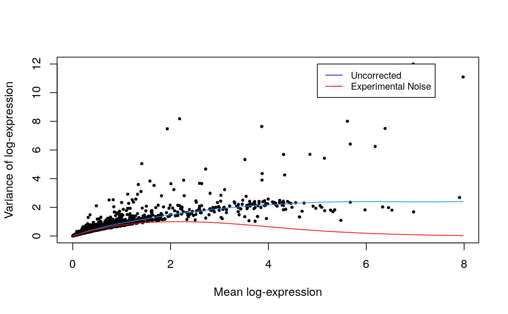

Import PBMC 10X Data (Cell Ranger 3.1.0 Output)
Matt Karikomi
2019-09-19
Source:vignettes/PBMC_10X.Rmd
PBMC_10X.RmdThis is an example of clustering, marker identification and pseudotime inference on a set of peripheral blood mononuclear cells (PBMCs).
Load and Preprocess Data (Download from 10X Genomics)
RSoptSC::ReadFilter10X is a wrapper for scran, scater, DropletUtils, whose documentation is a must-read for experimentalists.
url = "http://cf.10xgenomics.com/samples/cell-exp/3.1.0/5k_pbmc_protein_v3_nextgem/5k_pbmc_protein_v3_nextgem_filtered_feature_bc_matrix.tar.gz"
destfile = '/tmp/counts.tar.gz' # all data contained in "filtered_feature_bc_matrix"
extdir = '/tmp'
f = CFILE(destfile, mode="wb")
curlPerform(url = url, writedata = f@ref)
close(f)
utils::untar(tarfile = destfile, verbose = TRUE, exdir = extdir)
upper <- 3000 # number of variable genes
cache <- ReadFilter10X(filepath = paste0(extdir, "/filtered_feature_bc_matrix"),
dataformat = 'counts',
feature_annotation_key = "ENSEMBL",
annotation_db = 'org.Hs.eg.db',
pre_clust = TRUE,
rescale = TRUE,
filtercells = FALSE,
subsample = 700)
Compute the Similarity Matrix
Run L2R2 on the processed data, outputting the number of iterations and value of the objective.
S <- SimilarityM(lambda = 0.05,
data = similarity_data,
dims = 3,
pre_embed_method = 'tsne',
perplexity = 20,
pca_center = TRUE,
pca_scale = TRUE)Compute distances on the similarity matrix. If the truncated graph has multiple components, join them to allow inter-cluster distance estimation.
Cluster the Cells
Cluster the cells by factoring the similarity matrix. Infer cluster number using spectra of the ensemble Laplacian. In this analysis, we obtain bounds on the number of clusters, where the lower bound is equal to the number of zero eigenvalues and the upper bound is the index of the eigenvalue preceding the largest eigengap. We take this value as the cluster number.
clusters <- ClusterCells(similarityMatrix = S$W, n_comp = 15, .options='p')
H <- clusters$H
labels <- clusters$labels
n_clusters <- length(unique(clusters$labels))
plot(c(1:20),
clusters$ensemble$eigs$val[1:20],
xlab = NA,
ylab = 'eigenvalues',
main = 'Eigenvalues of the Graph Laplacian')
Visualize the Clusters
Cells are labeled by cluster membership and plotted on low-dimensional embedding (t-SNE) of the similarity matrix.
# define a scheme for the coloring. This is a required parameter for plotting discrete (factor) data
colorscale <- ColorHue(n = length(unique(labels)))
colorscale <- colorscale$hex.1.n.
# plot clusters
FeatureScatterPlot(flat_embedding = low_dim_mapping$flat_embedding,
feature = as.factor(labels),
title = "NMF Cluster Labeling",
subtitle = "t-SNE Embedding",
featurename = "Cluster ID",
colorscale = colorscale)